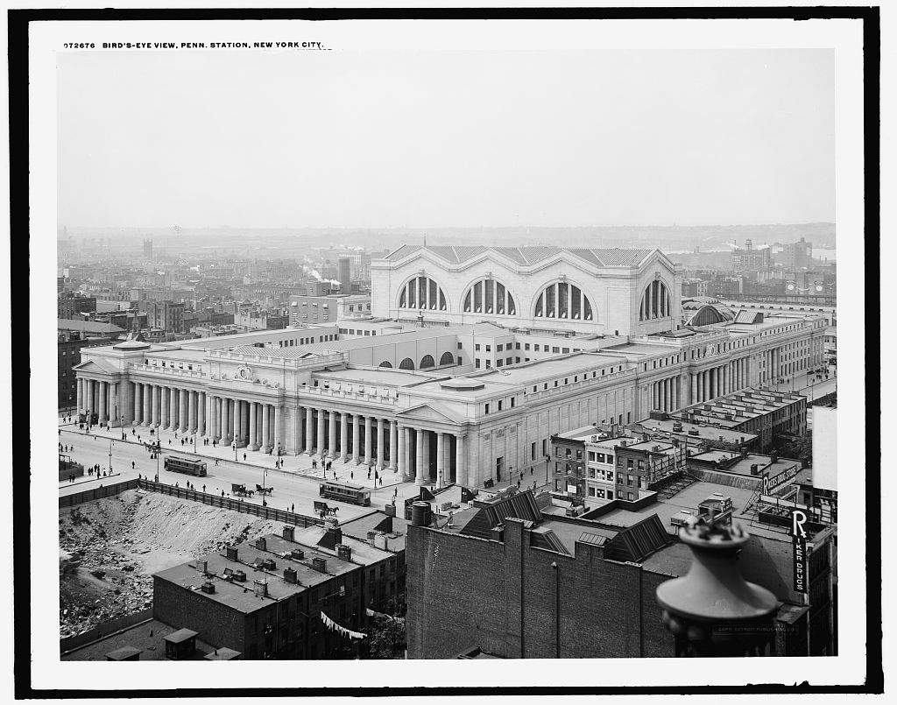
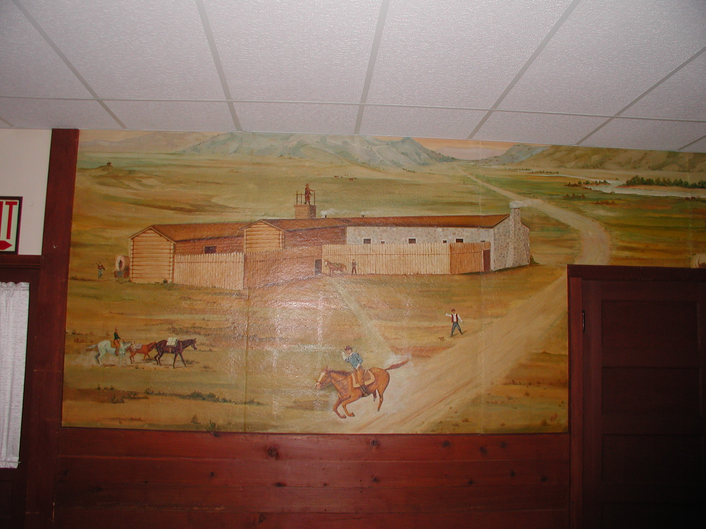

National Historic Preservation Act
The United States' Most Comprehensive Preservation Legislation
By Madelyn McKinney and Andrew Kracinski
Overview of the National Historic Preservation Act (NHPA)
On October 15, 1966, the National Historic Preservation Act (NHPA) was signed into law by President Lyndon B. Johnson. Enabled by the United States’ booming post-World War II economy, development projects were occurring all over the country. Many of these were massively destructive, leading to the demolition of urban neighborhoods and natural landscapes alike (NPS 2023a). As ever-increasing amounts of historically significant sites were razed, citizens became progressively more concerned about losses of heritage and knowledge. Their concerns were validated by early preservation programs like the Historic American Buildings Survey (HABS) which documented historic buildings but was powerless to save them (NPS 2023b). As a result of these growing anxieties, President Johnson formed a committee focused on historical preservation, which soon proposed the National Historic Preservation Act.
With the passage of the NHPA, the United States of America created a mandate for a national preservation program alongside a system of protections that encourage the identification and protection of historic resources (National Park Service 2025a). The NHPA does this through several mechanisms. First, it created the National Register of Historic Places (NRHP) which serves as the official federal inventory for locations of historical, architectural, archaeological, cultural, and engineering significance. Secondly, the passage of the NHPA created Section 106 and Section 110. Section 106 (named after its location in the NHPA) is a review process for projects conducted by federal agencies (or any project receiving federal funding) that requires the consideration of the effects of federally licensed, assisted, regulated, or funded activities on the properties listed in the NRHP or locations that are eligible for NRHP listing. Section 110 mandates that all federal agencies (in conjunction with the Secretary of the Interior) establish their own historic preservation programs for the identification, evaluation, and protection of historic properties. Third, the National Historic Preservation Act established a grant program that is supported by the Historic Preservation Fund. Finally, the NHPA created the Advisory Council on Historic Preservation, which is an independent agency that advises the President and Congress on preservation matters, along with federal agencies on their role in the national historic preservation program (NPS 2025a). While amendments have been made to the Act (with the most recent occurring in 2014 with Public Law 13-287 [NPS 2025a]), the goal of preserving historic locations has remained the same since its inception.
Predecessor Laws
Antiquities Act of 1906
An Act for the Preservation of American Antiquities, more commonly known as the Antiquities Act of 1906, was signed into law on June 8, 1906 (NPS 2025b). The Antiquities Act represents the first law in the United States of America that provided general legal protection for cultural and natural resources with the purpose of preserving objects (read here as locations) for the purpose of scientific and archaeological study (NPS 2025b). The Antiquities Act gives the President the ability to designate areas as National Monuments on existing federal lands (NPS 2025b). Despite being the first attempt at protecting archaeological resources in the United States, the law only states that there are “penalties upon conviction for unauthorized activities, such as excavation and removal of objects” (NPS 2025b) without going into depth on what these penalties are. Thus, the Antiquities Act of 1906 did little in stopping the destruction of archaeological sites as the penalties were deemed unconstitutionally vague (see McManamon 2006), thus requiring the passage of the Archaeological Resources Protection Act of 1979 (or ARPA). Despite this, the Antiquities Act of 1906 remains on the books and is routinely praised by monument advocates in its present form for the protection of sites (Vincent 2025).
Organic Act of 1916
While the Antiquities Act of 1906 grants the President of the United States of America the authority to designate areas as national monuments (NPS 2025b), it does not establish a single agency or department for the management of these lands. The closest that the Antiquities Act goes insofar as establishing an agency is granting the Secretaries of Agriculture, Interior, and War the authority to review and grant permits to qualified institutions (NPS 2025b). While this authority nominally grants these government agencies oversight into any research conducted on national monuments, it does not say who is in charge of maintaining the national monuments. Furthermore, these departments could administer the site, but there was not a unified agency dedicated to the preservation of our cultural heritage.
To remedy this, on August 25, 1916, President Woodrow Wilson signed the “National Park Service Organic Act” or more simply, the Organic Act of 1916. This law created the National Park Service as a federal bureau within the Department of the Interior for the express purpose of protecting the 35 established national parks and monuments, as well as any future national parks or monuments (National Park Service Organic Act 1916).
Historic Sites Act of 1935
During the Great Depression, President Franklin Roosevelt established the Civilian Conservation Corps (CCC) as part of the New Deal focused on helping the country through the Great Depression. The CCC focused on providing young men jobs in a variety of different work environments, with one of those jobs focusing on the preservation and development of state historic sites and national parks. At the same time, the Historic American Buildings Survey (HABS) was enacted to address the lack of historic preservation in the United States as well as to provide jobs to unemployed architects, photographers, and engineers who would consequently be paid to carefully document “significant examples of American architecture” (Mackintosh 1973, 4). Both of these programs found immense success and were very well-liked, but they existed––and held power––only because of the ongoing Federal emergency.
Cognizant of the fact that the majority of existing efforts were only temporary solutions, President Roosevelt was determined to find a way to continue attempts into the preservation of historic sites and buildings within the United States. From November 1933 to August 1935, Roosevelt focused intensely on researching and writing a policy that would preserve historic American sites “hallowed by the presence of and touch of great men or the passage of great events” (Mackintosh 1973, 11). On August 21, 1935, he signed into law the Historic Sites, Buildings, and Antiquities Act (AKA the Historic Sites Act). With this legislation, the Secretary of the Interior (via the National Park Service) was granted expanded powers such as carrying out research programs into historic sites, collecting and curating archival materials associated with sites, erecting commemorative signage, operating Federally-owned sites, establishing museums, and more (NPS 2025c).
Important Components
Section 101
Section 101 establishes the National Historic Preservation Act.
Section 106
Section 106 establishes the field of Cultural Resource Management (CRM) as we know it. This requires the evaluation of the potential impacts by projects on historic sites (both known and unknown) on federal property or projects that use federal funds (King 2020). It also establishes eligibility criteria for listing on the NRHP, which are as follows:
- Criterion A: This criterion establishes eligibility for listing on the NRHP “on the basis of association with events that have made a significant contribution to the broad patterns of our history” (King 2020, 48). In this definition, events are generally understood to include specific happenings at particular places and the processes that imply multiple events (King 2020, 49). History includes written, oral history, and prehistory (King 2020, 48).
- Criterion B: This criterion establishes eligibility for listing on the NRHP on the basis of its association “with the lives of persons significant in our past” (King 2020, 50). This is typically used to preserve locations where a political leader may have given an important speech or the location where an important book was written (King 2020, 50). Usually this does not include the locations where significant figures were born or lived, unless that significant figure has no other locations associated with that person’s life.
- Criterion C: This criterion establishes eligibility for listing on the NRHP on the basis of the embodiment of “distinctive characteristics of a type, period, or method of construction” that represents “the work of a master…possess high artistic values…” or “...a significant and distinguishable entity whose components may lack individual distinction” (King 2020, 50). This criterion is usually applied to architecture, but allows for the establishment of a historical district on the basis of the district being a distinguishable entity (King 2020, 51).
- Criterion D: This criterion establishes eligibility for listing on the NRHP on the basis that it has “yielded or may be likely to yield, information important in prehistory or history” (King 2020, 51). This is usually the criterion that archaeologists use to preserve archaeological sites, though it is the most vague of the four. When possible, archaeologists should use the other criteria as well and try not to default to this one.
For more information on Section 106, please go to this website: Section 106
Section 110
Added to the amended National Historic Preservation Act in 1980, Section 110 was created to lay out the “statute’s statement of Federal agency responsibility for identifying and protecting historic properties” (NPS 2022). The main points it establishes are the following:
- Responsibility for historic properties must be assumed by the heads of the Federal agencies that own or have jurisdiction over said properties.
- All Federal agencies must establish preservation programs for evaluating and nominating historic properties to the National Register of Historic Places (NRHP).
- Compliance by Federal agencies must follow the guidelines set out by Section 106 and the Advisory Council on Historic Preservation (ACHP).
- Properties not owned by or under the jurisdiction of a Federal agency must be fully considered for preservation by the agency if its actions affect them.
- All Federal agency preservation programs must be established through a process of consultation with the Secretary of the Interior.
Essentially, Section 110 ensures a Federal agency’s compliance with Section 106, setting out guidelines for how to create and maintain preservation programs in agreement with the goals established by the National Historic Preservation Act. Section 110 was majorly amended in 1992, largely to clarify and strengthen its existing intentions (NPS 2022). Since then, it has remained unchanged.
National Register of Historic Places
Established in Section 101 of the National Historic Preservation Act, the National Register of Historic Places is “the official list of the Nation’s historic places worthy of preservation” (NPS 2025d). Via completion of a process in which a historic property is researched and evaluated for age, integrity, and significance by an organization, agency, group, or individual, a property may be nominated to the Register. After nomination, the forms are examined by the State Historic Preservation Office (SHPO) of the state in which the historic property exists. If the SHPO approves the forms, they are forwarded to the National Park Service (NPS), who determine whether or not the submitted property is eligible for listing. If the property is found to be eligible, the forms are then sent to Washington, DC to be reviewed and potentially added to the Register by the Keeper of the NRHP (NPS 2025e).
Importantly, being added to the Register does not protect a historic place from potential destruction or other adverse effects. However, it does offer several benefits, such as its utility in allowing more people to find out about a historic place; use as an educational tool; ability to make property owners eligible for special preservation and conservation grants; and guarantee that properties will be more easily identifiable and researchable when potentially threatening projects take place near them (New Hampshire Division of Historical Resources 2026).
As of May 2025, more than 100,000 historic places have been added to the National Register! More nominations are made every day, and the NHRP’s website provides weekly summaries of all new entries.
Advisory Council on Historic Preservation
The Advisory Council on Historic Preservation (ACHP), established in Section 106 of the National Historic Preservation Act (NHPA), is a 20+ member council made up of members “from federal agencies, preservation organizations, Indian Tribes, and expert private citizens” (ACHP n.d.). It exists separately from the National Park Service, serving as an independent agency that focuses on the importance of preservation, historic sites, preservation-related law and policy, public outreach, and public education. The ACHP’s main responsibilities are to…
- Administer the National Historic Preservation Act.
- Advise Federal agencies in preservation-related matters.
- Address preservation-related issues alongside relevant parties.
- Award excellence in preservation efforts.
More information about the ACHP can be found here: achp.gov
Problems with the NHPA
Despite representing the strongest preservation language to date in the United States of America, many problems exist to the NHPA in the form of legislation. While federal lawmakers can attempt to repeal the NHPA at any time through legislation, the NHPA has recently come under attack from the Trump Administration. While not specifically about the NHPA, Interior Secretarial Order 3418 (in Section 4) explicitly directs the assistant secretaries to “review all relevant internal regulations, policies, and guidance to ensure the lawful implementation of Section 106 of the National Historic Preservation Act” (Burgum 2025). While this in and of itself does not indicate any weakening of the NHPA, Section 3 directs the assistant secretaries to take actions aimed at reducing barriers to the use of federal land and to “implement new and amended policies and procedures to increase the efficiency in the Bureau of Land Management’s adjudication of applications for permits to drill” (Burgum 2025). When examined together, these two sections appear to lay the groundwork for weakening the NHPA and Section 106 work for the benefit of businesses.
Additionally, while the NHPA establishes a heritage protocol in the United States, the very term “heritage” represents an inherent problem with the legislation. Heritage, as a concept, derives from a Western, Eurocentric worldview, as the current concept of heritage came out of Europe and was reinforced by Enlightenment ideas of science combined with a response to change in governance in the 19th century (Smith 2006, 17-18) that required controlling the historical narrative. Keeping in line with this scientific tradition, many heritage professionals today come from the fields of history, archaeology, museum studies, and architecture.
Heritage’s eurocentric origins also means that the field itself struggles when presented with alternative (i.e. Non-European/Western) worldviews (indigenous perspectives, non-mainstream narrative perspectives, etc.). Additionally, the past never constructs an event as important, it is always the present (Hanson et al. 2022, 439), thus making heritage less of a historical process and more of a cultural and social process (Smith 2006, 13) that relies upon the current dominant narrative to be relevant. Many locations and objects of heritage become irrelevant when the ruling class determines that a narrative change must take place, as seen by the Executive Orders issued by President Trump regarding exhibits at the Smithsonian as not falling in line with “Traditional American Values” (Trump 2025).
What Sorts of Sites are Relevant to the NHPA?
Example 1: Pennsylvania Station (Manhattan, New York)

The original Pennsylvania Station (opened in 1910) was an architectural marvel characteristic of the Beaux-Arts style and based upon Caracalla’s ancient Roman baths (Plosky 1999, 12). Its impact on New York City was immense, as it served as a gateway into the city for commuters from beyond the East River and Hudson River, allowing for faster, easier transportation from distances that had previously made Manhattan far less accessible (PBS 2014). At its peak, more than 109 million people visited Penn Station in a single year, accounting for nearly 70% of the city’s traffic (PBS 2014).
However, despite its beauty and impressive functionality, Penn Station was planned to be demolished in 1961 to make way for the Madison Square Garden complex (Plosky 1999, 7). As automobiles became a more common and affordable means of transportation, Penn Station was gradually losing commuters and in danger of becoming obsolete. Its demolition, practically, made sense, but architecturally and culturally, was a loss protested and mourned by architects, historical preservationists, and the public alike (Plosky 1999, 34). Even so, the plans for its demolition persisted, and Penn Station was slowly torn down between 1963 and 1966.
Public upset continued, and Penn Station, to this day, has never stopped being mourned. During its destruction, in an effort to save it, the Mayor of New York established the Landmarks Preservation Commission. Though the LPC could do little in its fledgling days to protect the Station, it became a full-fledged agency during the 1963-1966 demolition and soon gained the authority to actually save other landmark buildings and historic districts (Plosky 1999, 54). As tragic as Penn Station’s demise was, its legacy now lies in the LPC and NHPA––two powers with a genuine interest in and passion for historic preservation.
Example 2: Forest Grove Cemetery (Lexington, Missouri)

An investigation into Forest Grove Cemetery, a community-owned Black cemetery located in Lexington, Missouri, provides a glimpse into how marginalizing factors work together to damage a cemetery––and how the NHPA provides opportunities for invaluable pieces of heritage to be remembered and recorded. Defined in the 1870s as a “Negro cemetery,” the land where Forest Grove resides was already infamous as the site of a “pest house,” or nineteenth century quarantine facility (Lindquist 2020, 4). The cemetery’s historic lack of funds for perpetual care and official records, combined with its marginalized status, led to a situation in which the cemetery was endangered by the continued passage of time slowly decaying its grave markers and other forms of materiality. Fortunately, in response to this decay, individuals from the local community decided to band together to create the Forest Grove Cemetery Project (FGCP) in an effort to preserve the remaining fragments of the cemetery. While they themselves note that “we [the cemetery board] will never know the names of the many people buried here,” their efforts have nonetheless secured a place for the cemetery on the National Register of Historic places (Lindquist 2020, 5). The case of Forest Grove encompasses much of what it means for a cemetery to be marginalized, and it also offers encouragement to communities unsure of how to address and preserve their own dilapidated yet invaluable burial grounds. While being listed on the NRHP does not directly protect heritage sites like this one, it does empower communities to come together and ensure that they are recorded for future generations.
Example 3: Camp Douglas Officer's Club (Douglas, Wyoming)

Originally a Civilian Conservation Corps camp during the Great Depression, Camp Douglas was later transformed into a World War II Prisoner of War (POW) camp. The town of Douglas lobbied for the camp’s construction, and soon enough, the camp housed both Italian and German POWs (Weidel 2001). The Camp Douglas Officer’s Club was added to the National Register of Historic Places in 2001 because it contains murals depicting the American West that were painted by Italian POWs during their time there, and it also represents the last remaining aboveground structure attributed to the camp. Camp Douglas Officer’s Club is particularly important because it represents one of few POW camps listed on the NRHP despite World War II representing an event of immense global significance.
Related Webpages
Organic Act of 1916 as Written that Establishes the NPS
Bibliography
Advisory Council on Historic Preservation. n.d. National Historic Preservation Act. https://www.achp.gov/digital-library-section-106-landing/national-historic-preservation-act. Accessed February 17, 2026.
Advisory Council on Historic Preservation. n.d. About the ACHP. https://www.achp.gov/about. Accessed March 5, 2026.
Burgum, Doug. 2025. “Order Number 3418 Unleashing American Energy, February 3, 2025.” https://www.doi.gov/document-library/secretary-order/so-3418-unleashing-american-energy. Accessed April 2, 2026.
Hanson, Kelsey E., Steve Baumann, Theresa Pasqual, Octavius Seowtewa, and T. J. Ferguson. 2022. ‘This Place Belongs to Us’: Historic Contexts as a Mechanism for Multivocality in the National Register. American Antiquity 87(3): 439–56.
King, Thomas F. (editor). 2020. Cultural Resource Management: A Collaborative Primer for Archaeologists. Berghahn Books.
Lindquist, Judy Gover. 2020. Forest Grove Cemetery, Lexington, Missouri: History, Faces, and Stories. Forest Grove Cemetery Project.
Mackintosh, Barry. 1973. Historic Preservation as Public Policy: The Historic Sites Act of 1935. Washington, D.C.: National Park Service, History Division. https://www.npshistory.com/publications/preservation/historic-preservation-mackintosh-1973.pdf. Accessed February 23, 2026.
McManamon, Francis P. 2006. The Foundation for American Public Archaeology: Section 3 of the American Antiquities Act of 1906. In Harmon, David; McManamon, Francis P.; Pitcaithley, Dwight T. (eds.). The Antiquities Act: A Century of American Archaeology, Historic Preservation, and Nature Conservation. Tucson, AZ: University of Arizona Press. p. 172. ISBN 9780816525614.
National Park Service. 2022. The Secretary of the Interior’s Standards and Guidelines for Federal Agency Historic Preservation Programs (Section 110). https://www.nps.gov/articles/000/secretary-standards-federal-agency-historic-preservation-programs.htm. Accessed March 3, 2026.
National Park Service. 2023a. National Historic Preservation Act. https://www.nps.gov/subjects/historicpreservation/national-historic-preservation-act.htm. Accessed February 11, 2026.
National Park Service. 2023b. Historic American Buildings Survey. https://www.nps.gov/subjects/heritagedocumentation/habs.htm. Accessed February 11, 2026.
National Park Service. 2025a. National Historic Preservation Act of 1966. https://www.nps.gov/subjects/archeology/national-historic-preservation-act.htm. Accessed February 12, 2026.
National Park Service. 2025b. Antiquities Act of 1906. https://www.nps.gov/subjects/archeology/antiquities-act.htm. Accessed February 19, 2026.
National Park Service. 2025c. Historic Sites Act of 1935. https://www.nps.gov/subjects/archeology/historic-sites-act.htm. Accessed February 23, 2026.
National Park Service. 2025d. National Register of Historic Places. https://www.nps.gov/subjects/nationalregister/index.htm. Accessed March 3, 2026.
National Park Service. 2025e. How to List a Property. https://www.nps.gov/subjects/nationalregister/how-to-list-a-property.htm. Accessed March 3, 2026.
National Park Service. 2022. “Quick History of the National Park Service”. https://www.nps.gov/articles/quick-nps-history.htm. Accessed February 23, 2026.
National Park Service Organic Act, 39 Stat. 535; 16 U.S.C 1, 2, 3, and 4 (1916). https://www.govinfo.gov/content/pkg/COMPS-1725/pdf/COMPS-1725.pdf.
New Hampshire Division of Historical Resources. 2026. National Register of Historic Places. https://www.nhdhr.dncr.nh.gov/registers-recognition/national-register-historic-places. Accessed March 3, 2026.
Plosky, Eric J. 1999. The Rise and Fall of Pennsylvania Station: Changing Attitudes Toward Historic Preservation in New York City. MA thesis, Department of Urban Studies and Planning, Massachusetts Institute of Technology, Cambridge.
Public Broadcasting Service (PBS). 2014. Penn Station Today | American Experience. https://www.pbs.org/wgbh/americanexperience/features/the-rise-and-fall-of-penn-station-penn-station-today/. Accessed April 13, 2026.
Smith, Laurajane. 2006. Uses of Heritage. Routledge.
Special Committee on Historic Preservation, United States Conference of Mayors. 1999 [1966]. With Heritage So Rich. Preservation Books.
Trump, Donald J. 2025. “Executive Order 14253 of March 27, 2025, Restoring Truth and Sanity to American History.” https://www.whitehouse.gov/presidential-actions/2025/03/restoring-truth-and-sanity-to-american-history/. Accessed April 2, 2026.
Weidel, Nancy 2001. USDI/NPS Registration Form. Officer’s Club, Douglas POW Camp, Converse County, Wyoming. OMB No. 1024-0018. NPS Form 10-900 (Rev. 10-90).
Vincent, Carol Hardy. 2025. National Monuments and the Antiquities Act. https://www.congress.gov/crs-product/R41330. Accessed February 19, 2026.